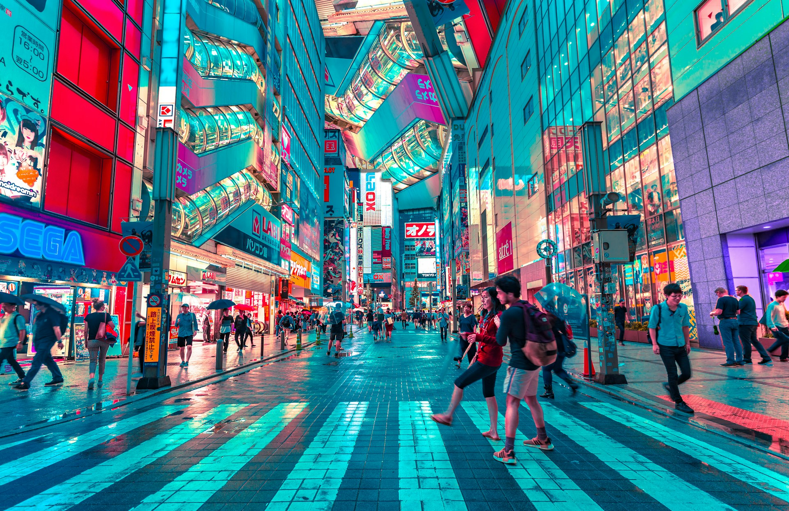

The 7-Day First-Timer's Classic
Focus: Tokyo & Kyoto
Best for: Seeing the essential highlights on a tight schedule.
Day 1-3: Tokyo. Dive into the world's biggest metropolis. Explore the neon lights of Shinjuku, the famous Shibuya Crossing, and the traditional charm of Asakusa's Senso-ji Temple. Book a hotel in Shinjuku →
Day 4: Travel to Kyoto. Experience the speed and efficiency of the Shinkansen (bullet train). Get your JR Pass here →
Day 5-6: Kyoto. Step into old Japan. Visit the stunning Kinkaku-ji (Golden Pavilion), walk through thousands of red gates at Fushimi Inari, and find peace in the Arashiyama Bamboo Grove.
Day 7: Depart. Easily travel from Kyoto to Kansai International Airport (KIX) or take the Shinkansen back to Tokyo for your flight home.